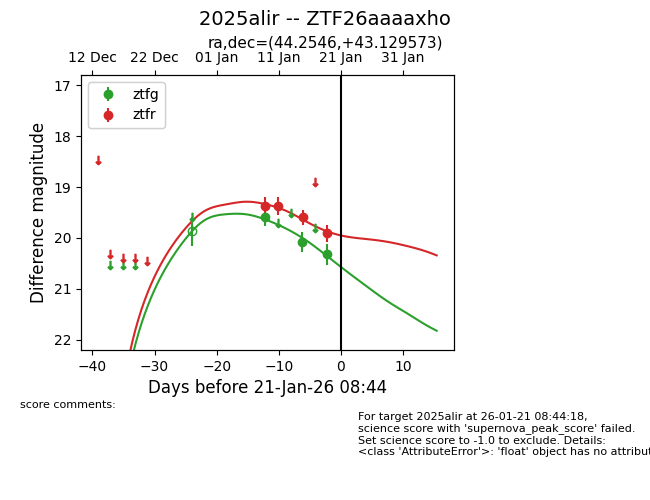
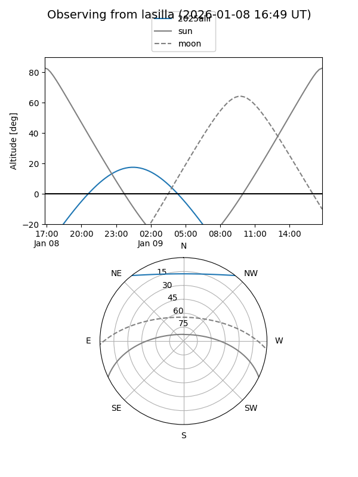
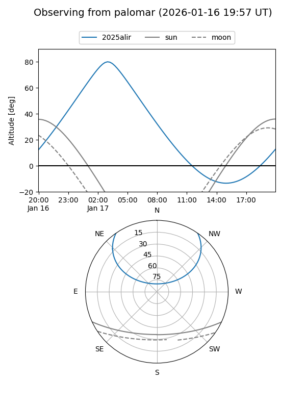
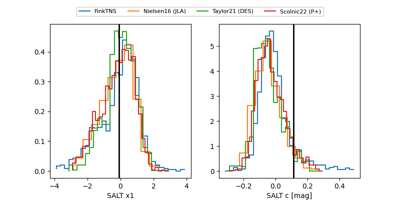

2025alir
Target 2025alir at 2026-01-19 05:35
Aliases and brokers:
FINK: link
Lasair: link
ALeRCE: link
TNS: link
YSE: link
alt names
ZTF26aaaaxho (ztf,fink_ztf)
2025alir (tns,yse)
Coordinates:
equatorial (ra, dec) = 44.2546,+43.12957
equatorial (HMS+DMS) = 02:57:01.11,+43:07:46.46
galactic (l, b) = (146.0048,-14.04565)
Flags:
Photometry:
last ztfg=20.32, ztfr=19.91
3 ztfg, 4 ztfr detections
Lightcurve

Visibility


Additional plots
